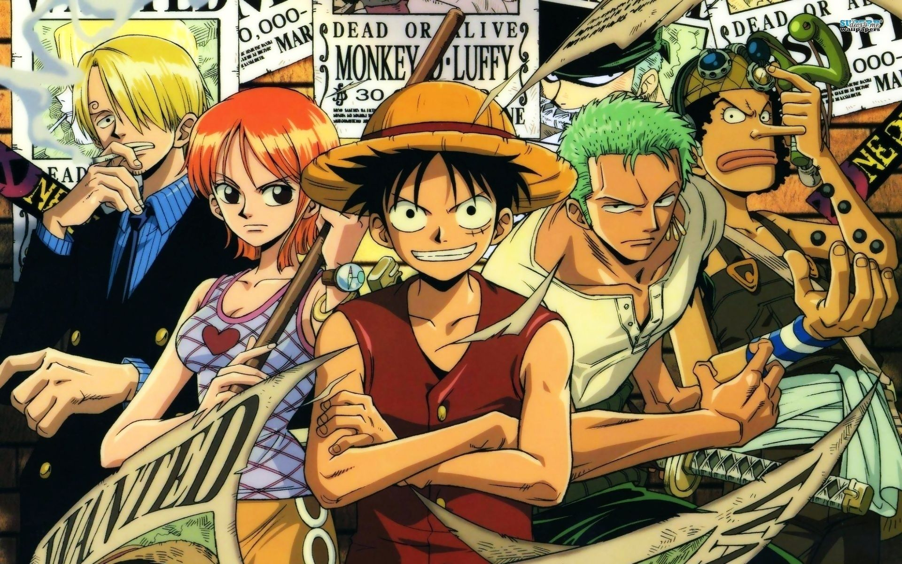

Straw Hat Pirates
The protagonists of the One Piece series are all the members of the Straw Hat Pirates (麦わらの一味, Mugiwara no Ichimi), a crew of ten pirates captained by Monkey D. Luffy.
Monkey D. Luffy
Monkey D. Luffy (モンキー・D・ルフィ, Monkī Dī Rufi) is the primary protagonist of the One Piece series. At age seven, he admires and tries to join the pirates of the "Red Haired" Shanks. Ridiculed and rejected, he inadvertently eats their treasure, the Paramecia-type Gum-Gum Fruit (ゴムゴムの実, Gomu Gomu no Mi), which gives his body the properties of rubber.
His reckless efforts ultimately lead him into grave peril causing Shanks to lose an arm while rescuing him. After this, Luffy gives up on joining Shanks, resolving instead to start a crew of his own and become King of the Pirates.
Roronoa Zoro
Roronoa Zoro (ロロノア・ゾロ, named after François l'Olonnais) is a swordsman who uses up to three swords simultaneously, holding one in each hand and a third in his mouth.[ch. 3, 5, 28] To fulfill a promise to Kuina, his deceased childhood rival, he aims to replace "Hawk Eye" Mihawk as the world's greatest swordsman.
Nami
Adopted and raised by navy seaman turned tangerine farmer Bellemere, Nami (ナミ) and her older sister Nojiko (ノジコ) witness their mother being murdered by the infamous Arlong, whose pirate gang occupies their island and extracts tribute from the population. Striking a deal with him, Nami, still a child, but already an accomplished cartographer who dreams of drawing a complete map of the world, joins the pirates, hoping to buy freedom for her village eventually.
Usopp
During his early childhood, Usopp (ウソップ, Usoppu) is abandoned by his father, Yasopp, who leaves to join the Red-Haired Pirates.
Then, as Banchina (バンキーナ, Bankīna), his mother falls ill, Usopp starts telling tall tales, expressing his hope that his father will return and take them out to sea. Even after his mother dies, Usopp does not blame his father for leaving. Despite his cowardly disposition, he strives to become a great pirate himself.
“Protecting what we cherish most as men is the reason why we formed this pirate crew!” - Usopp
Vinsmoke Sanji
A prince of Germa Kingdom, Vinsmoke Sanji (ヴィンスモーク・サンジ, Vinsumōku Sanji) is routinely ridiculed by his genetically enhanced siblings and is locked away by his father Judge for being a disgrace. With help from his sister Reiju, he escapes and flees the kingdom after it enters the East Blue and his father permits it.
Sanji's standard appearance is to be wearing a well fitting black suit, with a skinny black tie. His hair always covers one of his eyes and he is generally smoking a cigarette.
 Straw Hat Pirates "East Blue Saga"For more information on the crew: List_of_One_Piece_characters. And on the Manga One_Piece.